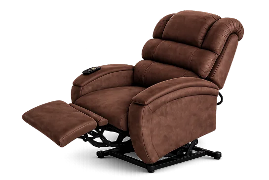
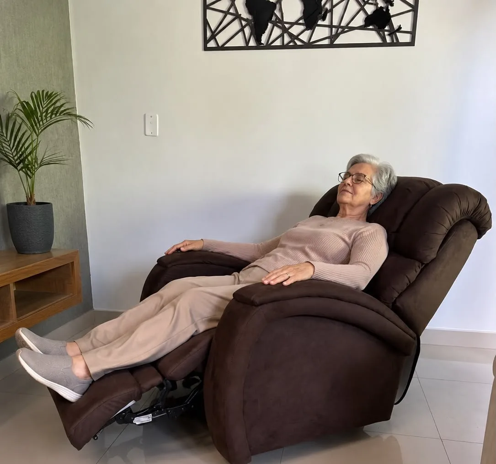
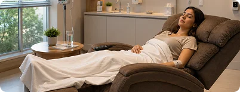
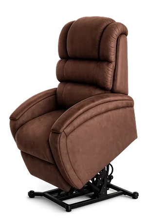
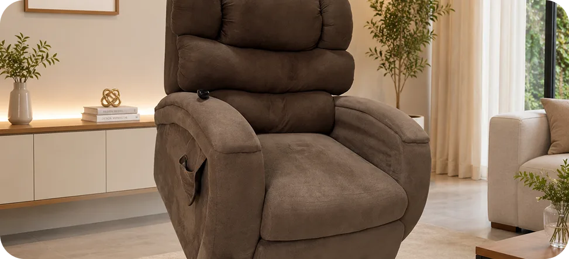
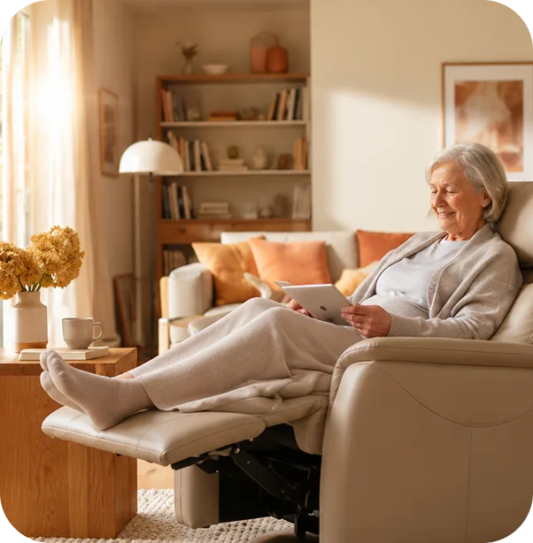

Elétrica convencional
Conforto completo para sua recuperação.
- Tecido suede
- Eleva os pés
- Deita as costas
- Controle elétrico de fácil uso
- Ajuste preciso
- Mais segurança e autonomia
- Ideal para pacientes com mobilidade reduzida
Mais conforto, segurança e autonomia durante a sua recuperação.
Entregamos a poltrona no endereço desejado, realizamos a instalação e orientamos sobre o uso para que você tenha tranquilidade desde o primeiro dia.


Pensando nisso, a M&M Locações oferece poltronas reclináveis elétricas desenvolvidas para proporcionar mais conforto, reduzir o esforço físico e oferecer maior segurança durante todo o período de recuperação.
Nossa equipe cuida da entrega, instalação e retirada da poltrona, permitindo que você concentre sua atenção apenas no que realmente importa: sua recuperação.
Duas opções de poltronas reclináveis elétricas para atender diferentes níveis de mobilidade.

Conforto completo para sua recuperação.

Para quem precisa de assistência para levantar.
Nossas poltronas são frequentemente utilizadas por pacientes em recuperação de abdominoplastia, lipoaspiração, mastopexia, mamoplastia, cirurgia bariátrica, cirurgia de hérnia, cirurgia de vesícula, cirurgia cardíaca, cirurgia de coluna, cirurgia de joelho, cirurgia de quadril, fraturas, pós-parto e outras cirurgias que exigem repouso e mobilidade reduzida.
Se você está procurando aluguel de poltrona para pós-operatório em Goiânia, nossa equipe pode ajudar a identificar o modelo mais adequado para sua necessidade.
Do agendamento da cirurgia até a devolução da poltrona, cuidamos de cada etapa para você focar na recuperação.
Você agenda o procedimento e nos avisa com antecedência.
Nossa equipe entende suas necessidades e indica o modelo ideal.
Reservamos a poltrona certa para o período exato.
Levamos até sua casa no dia combinado, com cuidado.
Montamos e orientamos você e sua família sobre o uso.
Ao final do período, retornamos para buscar sem preocupação.
A poltrona reclinável oferece conforto e segurança em diversos cenários de recuperação.
Histórias reais de quem passou pela recuperação com o conforto das poltronas M&M.
Nossos consultores estão prontos para ajudar você a escolher o modelo ideal para suas necessidades.
Conteúdo pensado para tornar sua recuperação mais leve e informada.

Entender suas necessidades de mobilidade e conforto é o primeiro passo para uma recuperação tranquila.
O conforto nos primeiros dias em casa com o bebê faz toda a diferença para a recuperação da mãe.

Mobilidade e independência são fundamentais para a qualidade de vida na terceira idade.